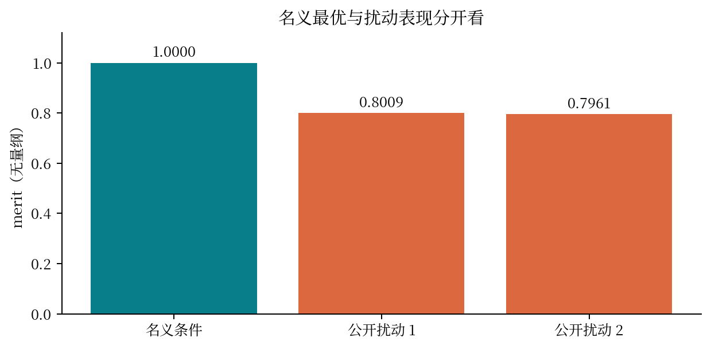
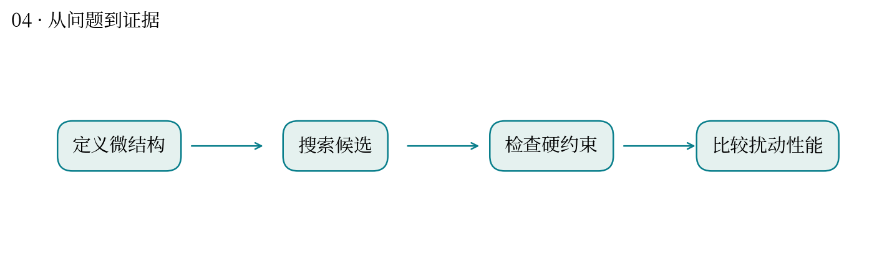
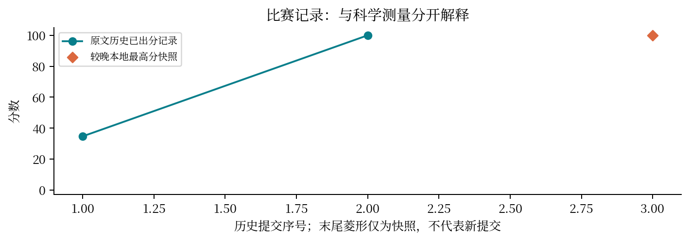

怎样排列微结构，才能既承受应力又保留变形能力？
最高分快照：100.0 · 2026-10-12T01:11:24+08:00
题目用合成代理模型描述两种局部变体及其耦合。逆向设计从想要的性能出发，搜索满足约束的微结构。
进行约 816 秒的并行搜索，检查名义性能、公开扰动场景和硬约束，输出统一设计与观测量。
公开输出的 nominal merit 为 1.0；两个公开扰动场景约为 0.8009 与 0.7961。图中同时显示名义与扰动表现，避免只展示最好工况。
名义最优不代表抗扰动；代理模型给出的应力和应变也不能当成真实材料实验值。
可类比植物性状选择：某环境里的高表现与跨环境稳定性是不同目标。模型场景与真实种植环境之间仍需验证。
本题高分说明在题设模型和评审口径下表现好，尚未建立真实材料的实验外推。



| attempt | 提交时间 | 分数 | 状态 |
|---|---|---|---|
| 51897 | 10-11 00:10:38 | 34.6804 | 已出分 |
| 52076 | 10-11 00:56:51 | 100.0 | 已出分 |
源文件 SHA256 见 证据清单；用 scripts/build.py 重建图表。